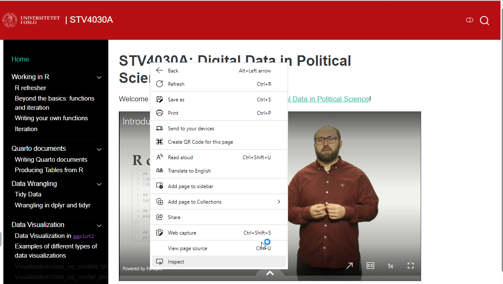
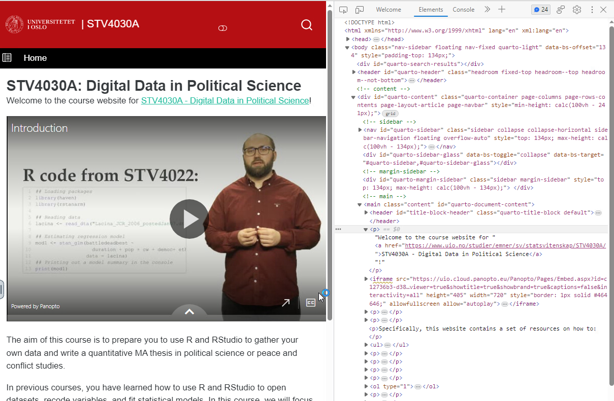
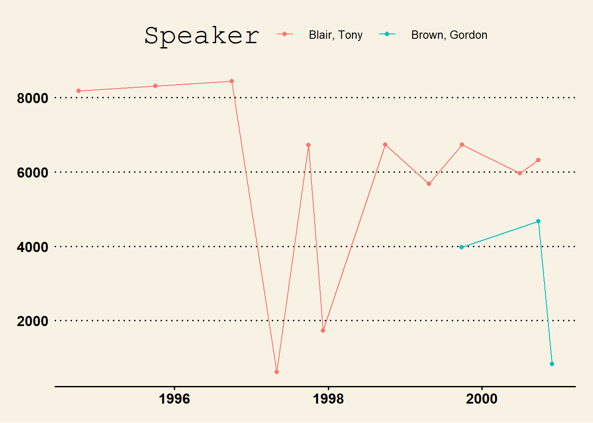

Sys.sleep(2 + abs(rnorm(1)))Webscraping
The internet is a fantastic resource for data and give very efficient ways of collecting data for research. One way of gathering data from the internet is to copy and paste from any given web-page into a sheet or document. This is, however, often inefficient. In this section, we will cover how to automate this process by utilizing various scraping utilities in R.
Good manners!
Before we start extracting data from the web, we need to make sure we are taught good manners when it comes to scraping; there are some important rules and norms we should follow.
Sleep
It is always good practice to not overload the webpages we are scraping from. Most sites have a limit on how many times an IP can ping their page within a given time frame. If you exceed this, you will be timed out for a while before you can resume scraping.
Worst case, you can overload the server hosting the website and bring it down. That will probably make you unpopular with the server maintainers.
Remember to add sleep between calls
In R, the best way to make sure you have delay between calls is to use the Sys.sleep() command. For instance, Sys.sleep(2) will force R to pause for 2 seconds.
You can also add random sleep by using rnorm:
R will then sleep for 2 seconds plus the absolute value of rnorm.
Save locally
In the same vein, we should also (if possible) save the scraped webpages locally on our computer. By doing this, we do not need to scrape everything each time we want to e.g run an analysis.
But, we also want to save locally because the internet is not static; webpages can change over time, which can result in replicability issues for researchers.
Recommended workflow
- Make separate scripts for scraping, preprocessing, and analyses
- Test your scraping script on a couple of pages before running on everything
- Set up iterative code with sleep that downloads the page to your drive
- Make use of control flow to check whether the files are already on disk.
robots.txt
Most webpages have a robots.txt that instructs web robots (e.g search engine bots) what data they can and can not fetch from the website. The robots.txt is located in the root URL of the website: “https://
For instance, New York Times has a robots.txt at https://www.nytimes.com/robots.txt.
When scraping a website, one should always look at the robots.txt file and build the scraper accordingly. If there are disallowed pages for “User Agent”, you should consider not scraping these.
Formats
As shown in the reading data section, there are a lot of different file formats we can encounter when working with data in R. In this section, we will focus on scraping .html, but also showcase how we can download a set of .csv files, and tips on how we can scrape sites that are parsed with javascript. We will also cover .xml and .json in the API chapter.
.html
Most webpages are written in Hypertext Mark-up Language (HTML). HTML is a markup language that gives your web-browser information on how a webpage should look for its users. At the core, HTML is build by a hierarchical structure of nodes encased in <> and closed by </>. For instance, <p> opens a paragraph node, which is closed by </p>. We will explore this further below.
As long as the webpage is openly accessible, the underlying HTML code is also available for users to read. You can access the entire source of any webpage you are browsing by simply pressing ctrl/cmd + u, or you can inspect specific elements of the page by right clicking on the page and then pressing “Inspect” (or pressing ctrl/cmd + i):

You will then get a tree of HTML nodes in a panel on the right side of your screen, where the node you right clicked on will be highlighted:

As we usually want to extract specific data from a webpage, excluding ads, menus, and other irrelevant data, these element nodes are very useful for extracting the data we want.
Selector Gadget
A helpful tool in finding element nodes in webpages is the Selector Gadget plugin for Google Chrome (or similar for your preferred browser). You can find a guide for using this plugin on the rvest webpage.
The most common structure of the HTML hierarchy is that you have the <html> or <!DOCTYPE html> node at the top that encompass the entire page, a <head> node of meta data (language, dates, etc), and a <body> node which contains the content of the webpage. The nodes are often referred to as parents and child. For instance:
<div>
<p>Hello World!</p>
</div>Here, <div> is the parent of <p> and <p> is the child of <div>.
HTML structure
If you have a .html file loaded in i R with the rvest package, you can inspect the entire structure of the html tree with xml2::html_structure(). The output might, however, be somewhat verbose.
There are a lot of nodes in HTML markup, but here is a list of some common nodes you will encounter:
| HTML code | Node description |
|---|---|
<div> |
Part of the document |
<section> |
Section of the document |
<table> |
A table |
<p> |
A paragraph |
<h2> |
Heading in size 2 |
<h6> |
Heading in size 6 |
<a> |
Anchor combined with the href attribute for making hyperlinks |
<img> |
An image |
<br> |
Vertical line break |
.html example
In this section, we will use the British Political Speech Archive as an example of scraping .html files.
First, as this is a short example, we want to extract only the speeches by Labour between 1990 and 2000. You can follow the instructions in the video below for how to obtain this link. Following the good manners section above, we download the page one time:
download.file("http://www.britishpoliticalspeech.org/speech-archive.htm?q=&speaker=&party=4&searchRangeFrom=1990&searchRangeTo=2000",
destfile = "../data/scrape/bps/lab_90-00.html")We can now read this .html file with the rvest package and extract the table of speeches:
1bps_front <- read_html("../data/scrape/bps/lab_90-00.html")
2lab_speak <- bps_front %>%
html_nodes("table[class='results-table']") %>%
html_table() %>%
bind_rows()- 1
-
Reading the
.htmlfile - 2
- Extracting the table node and search result class attribute, then converting to a table and binding the rows (unlisting)
1lab_txt_links <- bps_front %>%
html_nodes("table[class='results-table'] > tbody > tr > td > a") %>%
html_attr("href") %>%
str_c("http://www.britishpoliticalspeech.org/", .)
2lab_txt_ids <- str_extract(lab_txt_links, "[0-9]+$")
lab_speak$id <- lab_txt_ids- 1
- Extracting the hyperlinks for all speeches (used below) and pasting with the root URL of the webpage
- 2
- Extracting the numerical id of each speech and inserting it to the data frame (also used below)
In the next step, we want to download the actual speeches. This involves extracting the links for each item in the list of our front page, download the page from that link, and extract the data we want from that page.
1for(i in 1:length(lab_txt_links)) {
2 download.file(lab_txt_links[i],
3 destfile = str_c("../data/scrape/bps/txt/",
lab_txt_ids[i],
".html"))
Sys.sleep(3)
}- 1
-
For each number in 1 to the length of
lab_txt_links - 2
-
… download link
i - 3
-
… and store it in the folder
data/scrape/bps/txt/, names as its id and the.htmlfile extension.
Finally, we can iterate over the downloaded speeches and extract the text we want from these pages. Turns out, by inspecting one of the speech pages, that there is a div node with the class attribute and “speech” value. This makes the extraction straightforward:
1bps_files <- list.files("../data/scrape/bps/txt", full.names = TRUE)
lab_speak$text <- NA
2for(i in bps_files) {
3 tmp <- read_html(i) %>%
4 html_nodes("div[class='speech']") %>%
5 html_text() %>%
6 str_replace_all("\\s+", " ")
7 lab_speak$text[which(lab_speak$id == str_extract(i, "[0-9]+"))] <- tmp
}
8lab_speak[1:3, c(1:3, 6)]- 1
-
Listing all files containing the speeches and making a holder variable for the texts in the data frame
lab_speak - 2
- For each of the files, we want to…
- 3
- … read the html-file
- 4
- … extract the div node with the speech class
- 5
- … convert the speech to text
- 6
- … and, replace all connected whitespace with one space
- 7
-
Inserts the text to the row in
lab_speechwith corresponding id - 8
- Printing a subset of rows and columns to show how the data looks.
# A tibble: 3 × 4
Date Party Speaker text
<chr> <chr> <chr> <chr>
1 30/11/2000 Labour Brown, Gordon " Speech at the New Deal Conference, London 2…
2 26/09/2000 Labour Blair, Tony " Leader's speech, Brighton 2000 Tony Blair (…
3 25/09/2000 Labour Brown, Gordon " Chancellor's speech, Brighton 2000 Gordon B…Now, we can use the text for whatever we need the text for. Say I want to look at speech length (number of words) comparisons between Gordon Brown and Tony Blair:1
library(ggplot2)
lab_speak %>%
filter(str_detect(Speaker, "Blair|Brown")) %>%
mutate(nwords = quanteda::ntoken(text),
Date = as.Date(Date, "%d/%m/%Y")) %>%
ggplot(aes(x = Date, y = nwords, color = Speaker)) +
geom_point() +
geom_line() +
ggthemes::theme_wsj() 
.csv
The data we want to use in our research might, of course, already be available in structured formats. A common way to share data is in the .csv format. See the section on reading data for more information in the .csv format.
1all_csvs <- read_html("https://github.com/MainakRepositor/Datasets")
2all_links <- all_csvs %>% html_nodes("a") %>% html_attr("href")
3csvs <- all_links[which(str_detect(all_links, "\\.csv"))] %>%
4 str_remove("/MainakRepositor/Datasets/blob/master/")
5csvs[1:3]- 1
- Reading the folder of datasets
- 2
- Extracting all links from the page
- 3
-
Subsetting only links ending with
.csv - 4
-
Removing “/MainakRepositor/Datasets/blob/master/” from the links; now the only thing that remains is the file name of the
.csvfiles. - 5
-
Printing the first three
.csvfiles
[1] "2018-personality-data.csv" "AB_NYC_2019.csv"
[3] "Ads_CTR_Optimisation.csv" 1raw_links <- str_c(
"https://raw.githubusercontent.com/MainakRepositor/Datasets/master/",
csvs
)
2for(i in 1:3) {
readr::read_csv(raw_links[i], show_col_types = FALSE) %>%
head() %>%
print()
}- 1
-
Pasting the name of the
.csvwith the standardized address of raw data on Github - 2
-
Looping over 1 to 3, where the first three links from
raw_linksis read from the repository, and then the first few rows printed to the console
# A tibble: 3 × 3
userid openness agreeableness
<chr> <dbl> <dbl>
1 8e7cebf9a234c064b75016249f2ac65e 5 2
2 77c7d756a093150d4377720abeaeef76 7 4
3 b7e8a92987a530cc368719a0e60e26a3 4 3
# A tibble: 3 × 3
id name host_id
<dbl> <chr> <dbl>
1 2539 Clean & quiet apt home by the park 2787
2 2595 Skylit Midtown Castle 2845
3 3647 THE VILLAGE OF HARLEM....NEW YORK ! 4632
# A tibble: 3 × 3
`Ad 1` `Ad 2` `Ad 3`
<dbl> <dbl> <dbl>
1 1 0 0
2 0 0 0
3 0 0 0Javascript parsed pages
Although we can get far with scraping .html sites, some webpages are procedurally generated with JavaScript2. A common way of scraping these types of pages is to use Selenium which automates browser behavior. If you are interested in learning more about using selenium in R, check out this guide.
Footnotes
Obviously, this figure does not really show anything interesting. But take a look at the text data section↩︎
JavaScript is a scripting language used to add interactivity and dynamic behavior to webpages.↩︎